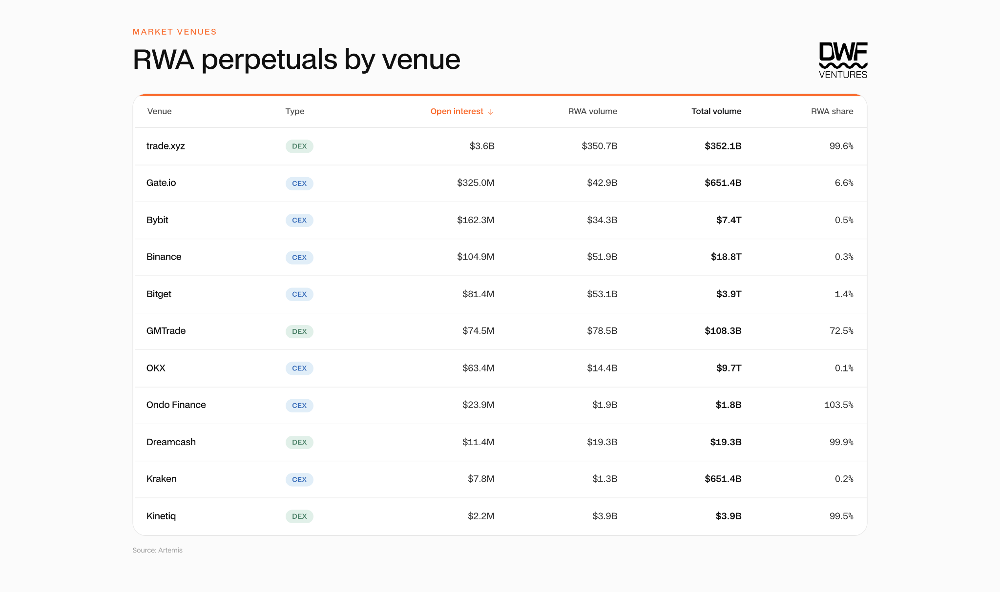
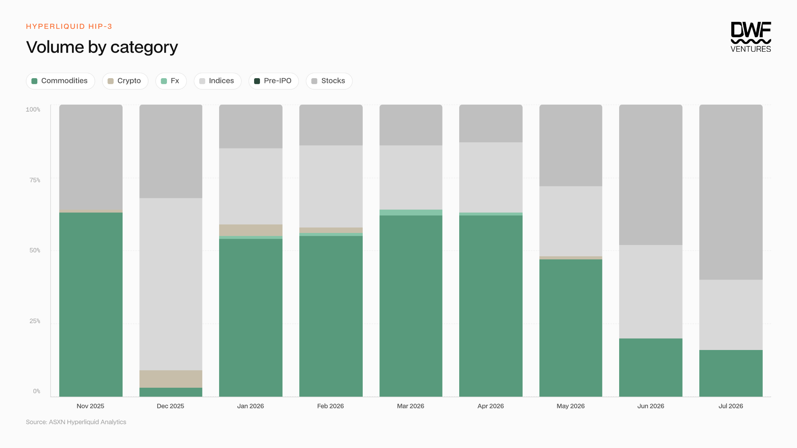
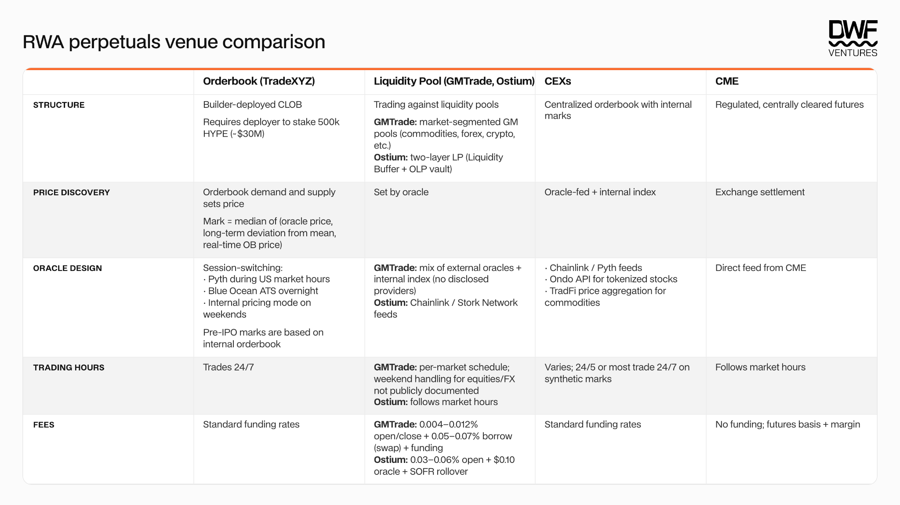
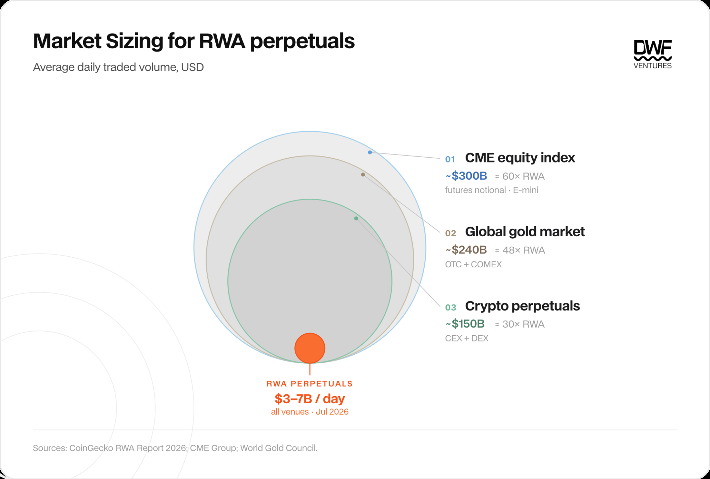

Key Takeaways:
On-chain RWA share of daily perp volume doubled in four months to a 37% peak in July 2026.
Two proven use cases for RWA perpetuals on-chain: weekend exposure and pre-IPO price discovery. On-chain venues are also proving to have much stickier capital with wider and quicker access to these assets.
As frontends proliferate, the real edge is in developments on the backend. The four categories that would determine which venue wins are liquidity, new markets velocity, pricing infrastructure and licensing/regulatory positioning.
The entire RWA perpetuals market is still 30–60x behind crypto perps and CME equity futures, with room to capture that flow. On-chain will continue to drive innovation, liquidity and price discovery while CEXs and brokerages serve as distribution.
Since March, RWA share of total daily perp volume on-chain has grown steadily, hitting over 37% at peak — a 100% growth in just 4 months. This is significant growth given the market did not exist just 6 months ago. Our past article covered the move towards the "perpification" of everything, deep diving into the mechanisms of different platforms and what the future could hold for RWA perps both on and off-chain. Since then, markets have presented stress tests and introduced new mechanisms with better underlying infrastructure being built. This article looks into the current state of the market and where we believe the real edge lies going forward.
State of the Market
On-chain perps venues like TradeXYZ (Hyperliquid HIP-3) led the charge for adoption of these assets initially, but as demand grew CEXs are also stepping in. Binance has partnered with traditional brokerage infrastructure to offer 24/5 trading of US tokenized equities, while Coinbase introduced pre-IPO perpetuals for trending private companies such as SpaceX, OpenAI and Anthropic.
Looking at the data, cumulative volume and OI on CEXs remain low relative to TradeXYZ, with a much higher churn rate that suggests less sticky users. Listing velocity and incentives also deeply favour on-chain. Deployers capture a direct, transparent reward for being first to list a market, whereas on CEXs the listing process is slower and opaque, with no external incentives to move quickly.

RWA perpetuals by venue (Source: Artemis)
The asset categories that see the most traction are commodities and stocks, with the latter increasing its market share rapidly in the past 3 months. This could be attributed to the rise of traders wanting access to different regional markets, which are often constrained by the jurisdiction they are in for traditional brokerages. On-chain alternatives bypass these and provide access to the same price appreciation that traders are looking for.

HIP-3 volume by category (Source: ASXN Hyperliquid Analytics)
The two main benefits for RWA perps are price exposure to underlying assets through weekends and price discovery for pre-IPO equities. Weekend availability allows traders to express their position ahead of usual opening hours, frontrunning other traders on traditional exchanges. Price discovery is essentially a synthetic book on market demand, but has proven to be quite accurate in predicting IPO prices and is the only vehicle that gives easy exposure to these private companies.
The table below shows a breakdown of the different models we see today. Orderbook based designs are much more common but liquidity pool models are slowly growing. It allows easier bootstrapping of liquidity for new long-tail markets and can attract non-traders who are seeking yield opportunities.

RWA perpetuals venue comparison
Key risks for on-chain platforms include centralization and the 24/7 market risk. Pricing mechanisms differ significantly from venue to venue and users might face deployer oracle centralization, especially for weekend internal pricing. Traders might end up paying higher fees as weekend volatility risk is pushed into dynamic funding rates and market maker spreads.
On-chain as the Frontier
Venues are usually ranked on what the frontend surfaces — distribution and volume. We would argue the durable edge sits in the backend. Incentives can buy initial distribution, but liquidity migrates to wherever execution is most efficient and will concentrate where the pricing and mechanism is the strongest. Traditional venues are now competing for the same flow with CME going 24/7, Nasdaq and NYSE extending to near-round-the-clock sessions, pointing towards the trajectory of all-in-one platforms where equities, commodities, FX and crypto trade under one roof. Thus, the differentiators for venues will be distilled down into liquidity, markets, pricing infrastructure as well as licensing or regulatory positioning. Solving these problems requires new plug-ins, or incumbent infrastructure adapting to the rising needs — which on-chain is primed to solve.
- Liquidity: This is a key factor in determining whether new markets can scale effectively and offer a credible market for users. On-chain venues hold a structural advantage in bootstrapping liquidity for new markets as trading can be routed against LP pools rather than waiting for market makers to show up. GMTrade does this with per-market vaults, where users deposit into a pool tied to a single pair and become the direct counterparty to its traders, earning yield for underwriting that specific market. We believe that there will be a rise of decentralized market-making protocols that let users deploy their own customized strategies, enabling better execution for the long tail of markets.
- Markets: Traditional venues lag badly on speed and ease of listing. Bringing a new market live is pretty complex, particularly for assets like pre-IPO equities which have no existing liquid, tradable reference and no proper frameworks for representation. On-chain is better positioned here as regulatory concerns can be sidestepped, which compresses the time to launch effectively. Hyperliquid's HIP-3 gates this permissionless process via capital to filter for quality listings as deployers have to stake 500K HYPE to launch a market. In return, they earn a 50% share of the fees which incentivizes speed and answering to actual user demand. Launch by Kinetiq then democratizes access to that system, letting users with smaller stakes participate in deployments and earn a share of the fees the markets generate.
- Pricing infrastructure: As these markets expand, demand for equity pricing and 24/7 data infrastructure will increase as well. It is crucial to understand pricing mechanisms and build trust in this area as it determines how each trade is settled on different venues. Pricing could be incredibly volatile and susceptible to real life events that do not reflect quickly enough on-chain. For example, Ventuals' SpaceX (SPCX) market crashed 45% in 30 minutes, liquidating 405 users across 1,393 positions for $1.51m, caused by an off-chain private market data provider which mishandled SpaceX's 5-for-1 stock split. This could cause huge dents in user confidence and hence, better and trusted infrastructure will always be needed. The major on-chain oracle providers have expanded coverage with Chainlink extending data streams to tokenized US stocks, and Pyth with purpose-built 24/7 indices for equities, metals and oil. Entirely new asset classes like compute and GPU/CPU pricing are coming live, with expected strong demand. Ornn's Compute Price Index (OCPI) is partnered with the Intercontinental Exchange (ICE), offering pricing on AI hardware such as H100 chips. Pending regulatory approval, the index could eventually be offered on the NYSE, which would bring the market for compute futures to the masses.
- Licensing / regulatory positioning: Since May, the US has opened an onshoring path for perpetuals. The CFTC issued a policy framework covering perpetual contract listings including 24/7 trading, clearing and settlement. They also approved Kalshi's BTCPERP as the first US-listed perpetual future, setting the precedent for submissions to follow. Any protocol that is able to position themselves at the forefront of this movement — working on licensing and compliant access to on-chain markets — will stand to gain the most when regulations eventually become clear.
Where Does the Real Edge Lie?
The market size for RWA perpetuals is still 30–60x behind crypto perpetuals and CME equity futures. As demand for trading alternative assets grows, we believe that RWA perpetuals will capture a large part of this flow.

Market sizing for RWA perpetuals — average daily traded volume (Sources: CoinGecko, CME Group, World Gold Council)
We believe that on-chain will remain the experimental ground fostering product innovation, enhancing liquidity and leading price discovery, while centralized exchanges and traditional brokerages remain key distribution channels. This means that there are a lot of winners that would emerge from this category, and we are excited to back teams building in this sector.